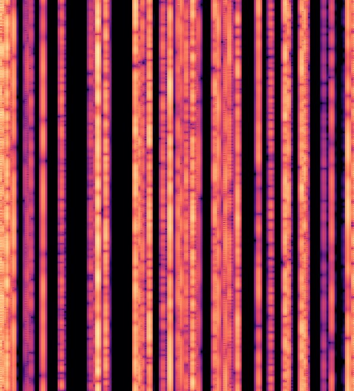
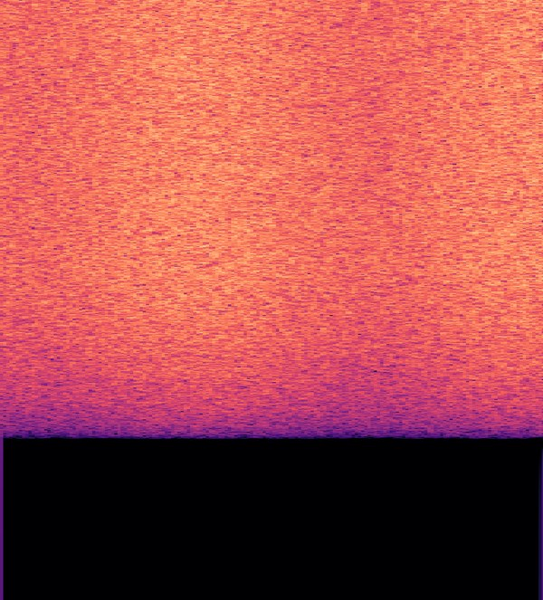
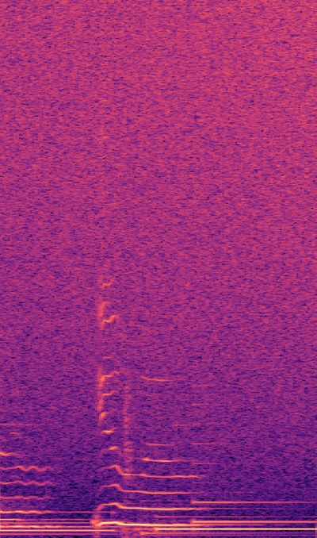
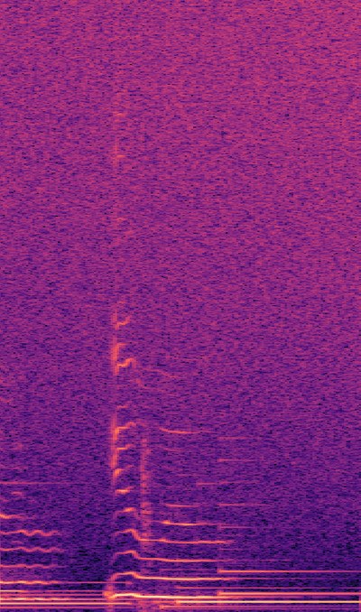
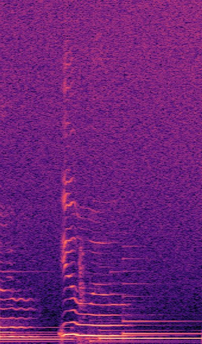
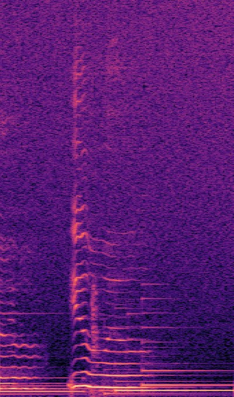
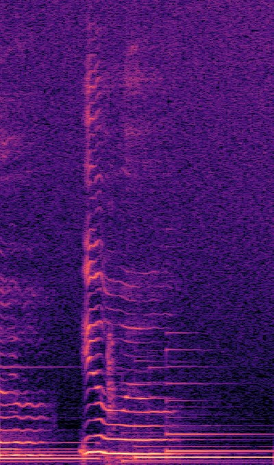
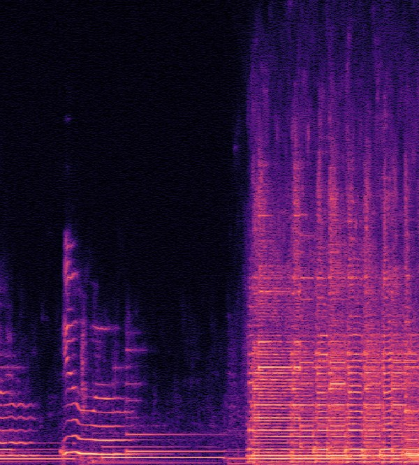
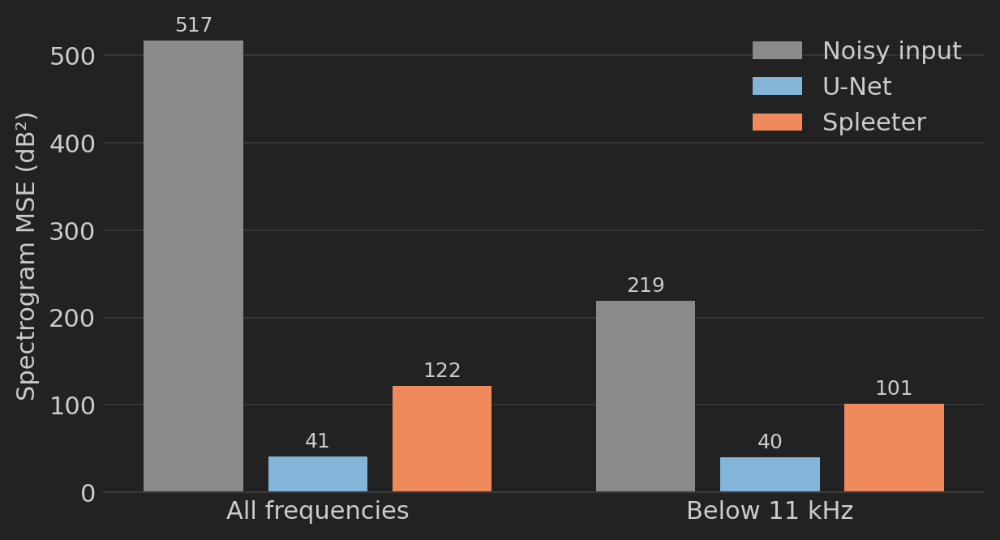
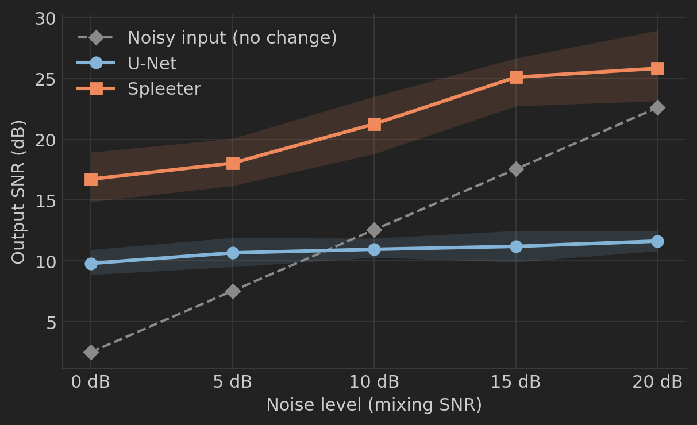

Overview
Recorded music often carries artifacts introduced by the media on which it is stored, such as the crackle of worn vinyl records and the hiss of magnetic tape.
We treat the removal of these artifacts as an image segmentation problem by converting audio into a spectrogram with the Short-Time Fourier Transform, and we compare two encoder-decoder networks trained from scratch on this task: a U-Net of our own configuration and Spleeter, an open-source model originally designed to separate musical stems. We train both on music from the Free Music Archive mixed with either synthetic vinyl crackle or tape hiss at signal-to-noise ratios between 0 and 20 dB, and we evaluate the accuracy of their predicted spectrograms as well as the quality of the audio they reconstruct.
Our U-Net predicts spectrograms roughly three times more accurately than Spleeter, with a mean squared error of 41.07 dB² compared to 122.10 dB², while Spleeter reconstructs considerably cleaner audio, reaching an average signal-to-noise ratio of 21.28 dB against 10.83 dB for our U-Net, whose output falls below the 12.35 dB of the noisy input. The discrepancy persists when both models reuse the phase of the noisy mixture, so it is not caused by phase estimation, which only lowers our U-Net’s score further.
We attribute the discrepancy instead to our U-Net being trained and evaluated on decibel spectrograms, which emphasize quiet bins that carry little of the audio’s energy, and to its predicting the clean spectrogram directly rather than masking the mixture, which leaves its output near 11 dB regardless of how clean its input is.
Figures
Noise types


Noise levels





Spleeter masking



Spectrogram error

Audio quality
